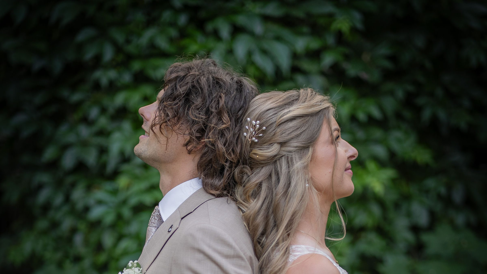
Fotografuję dzień ślubu tak, jak przebiega.
Nazywam się Mariusz Świerguła. Fotografuję śluby w Łodzi i w całej Polsce: ceremonię, ludzi, drobne gesty. Przed ślubem pytam Was, kogo i czego nie mogę pominąć.
Kalendarz na 2027 jest otwarty.
Wybrane kadry
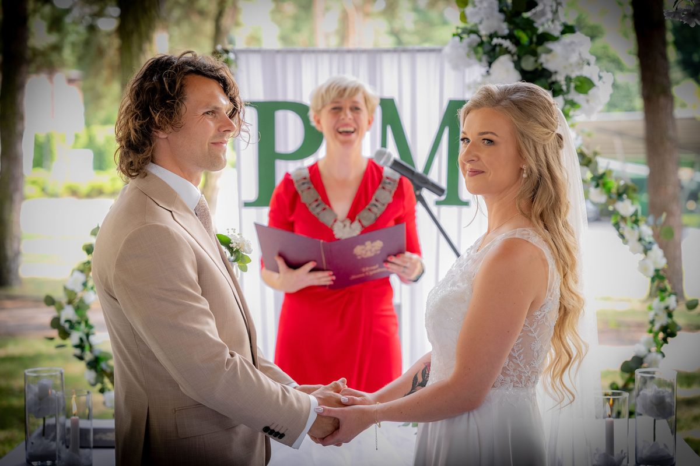
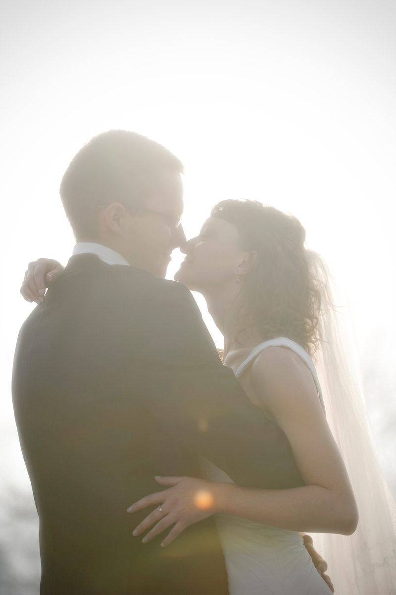
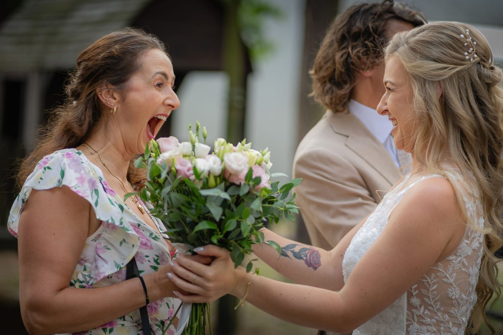
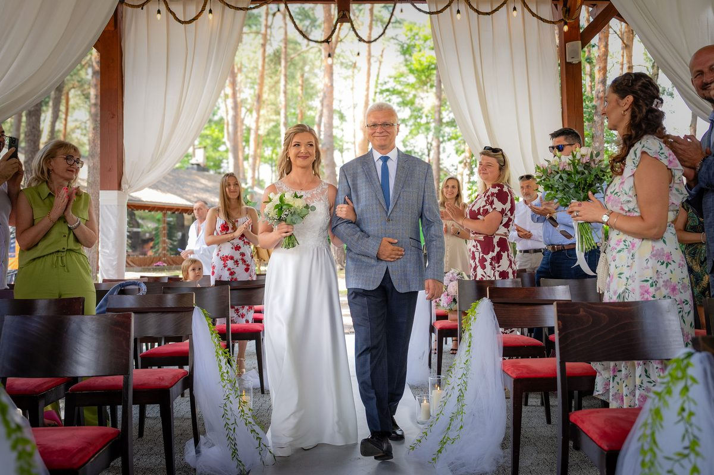
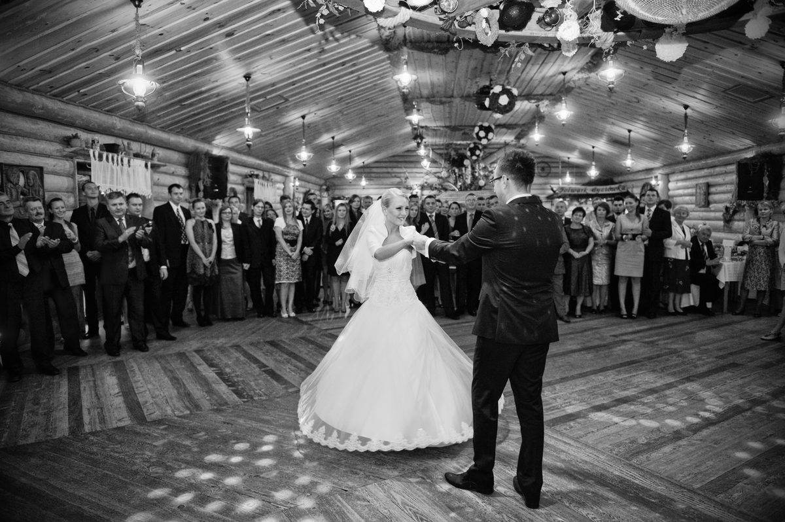
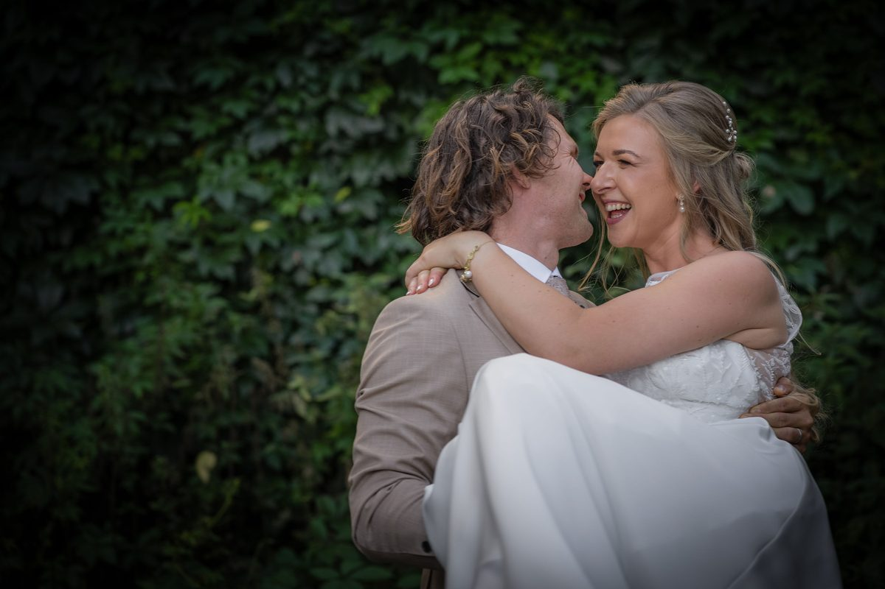
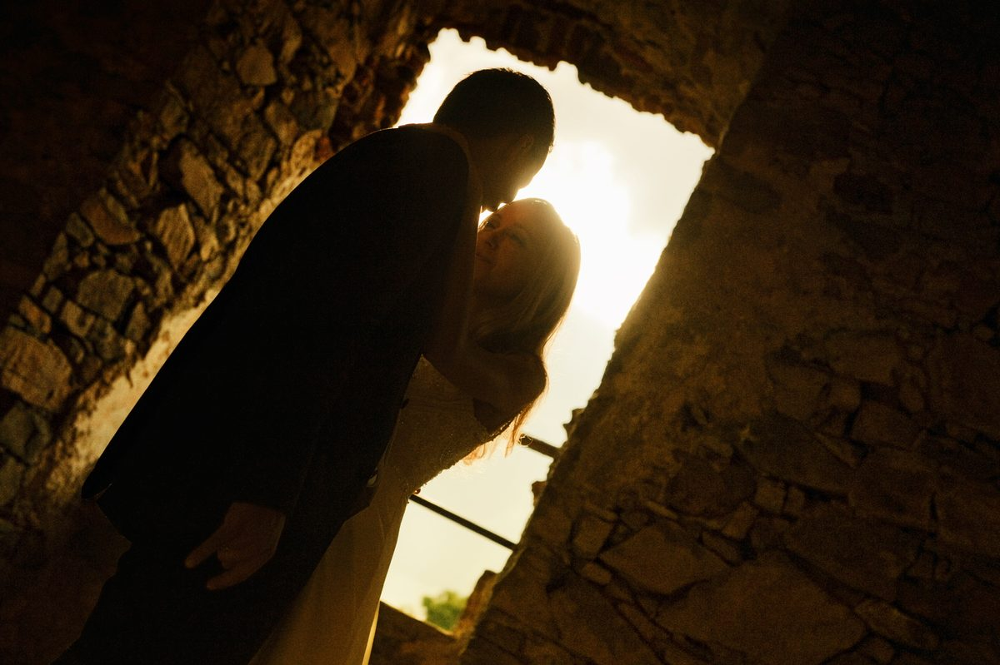
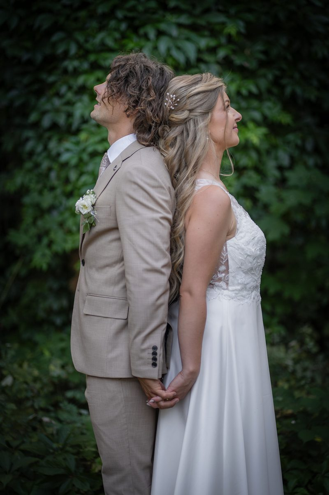
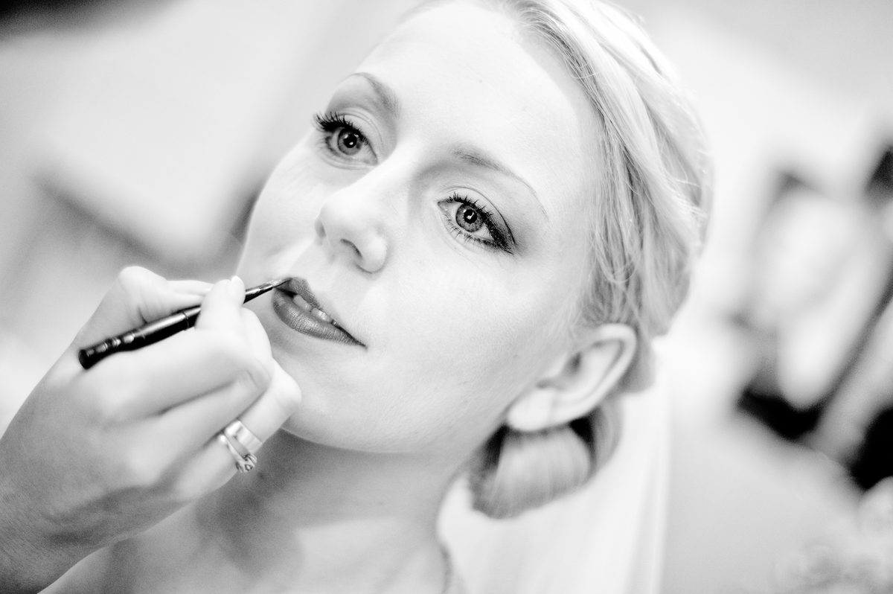
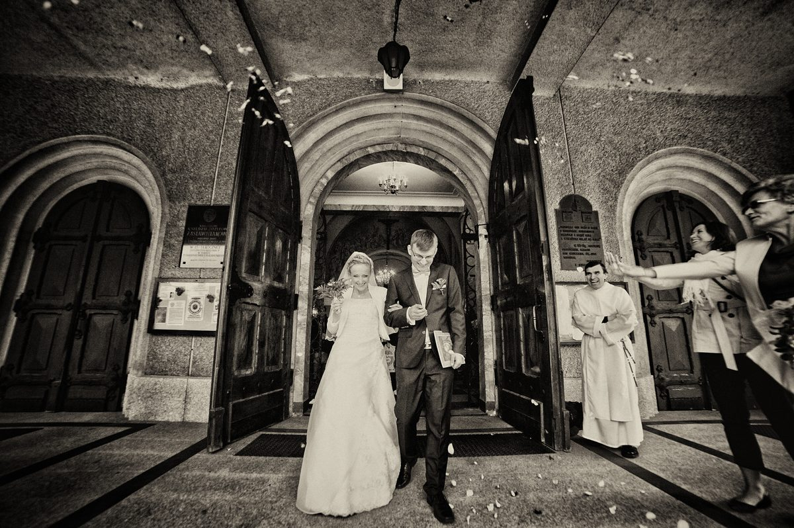
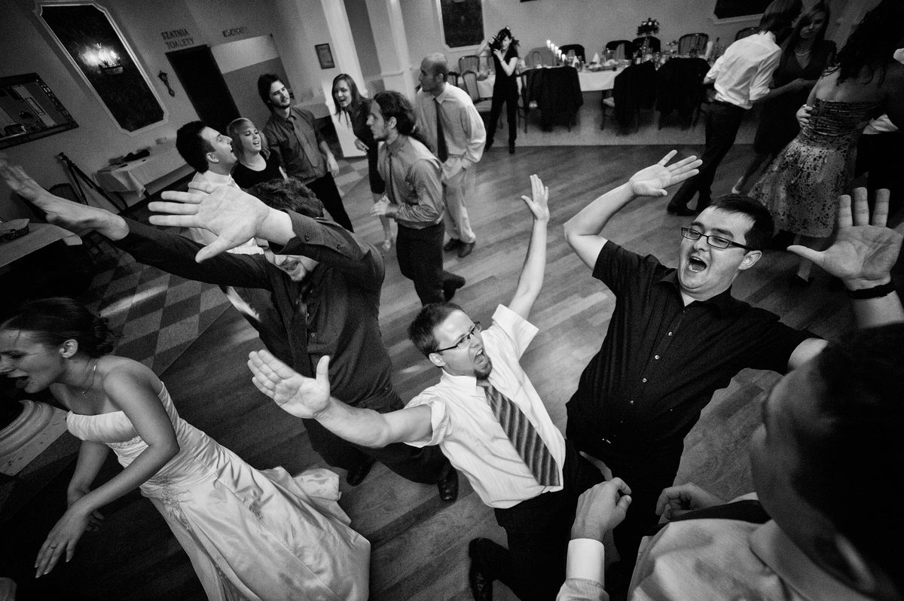
Do wymianyWspółczesny ślub kościelny: ceremonia w kolorze
Do wymianyPrzygotowania i detale w kolorze, bez winiety
Do wymianyPrzyjęcie wieczorem: pierwszy taniec, goście
Historia · 2026
Ślub cywilny w plenerze.
Cały dzień w jednej opowieści: wejście, ceremonia, życzenia, przyjęcie. Pełna historia w przygotowaniu.